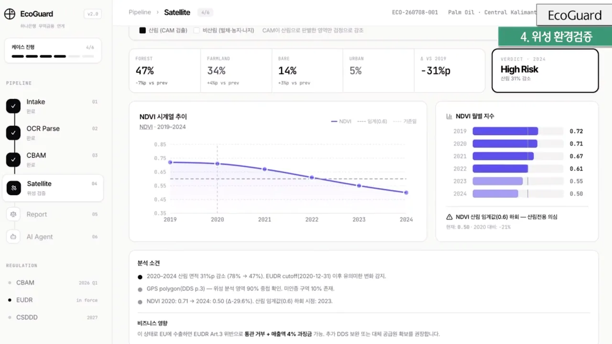
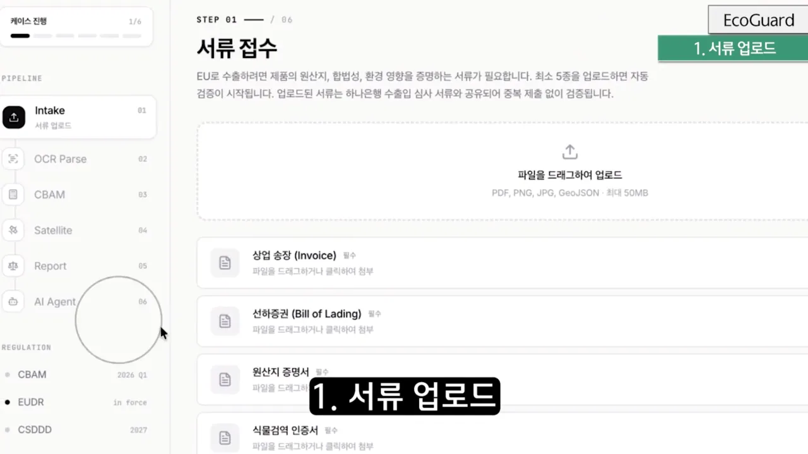

PUBLIC CASE STUDY · 01 / 04
EcoGuard · Reconstructed public record
기술을 만드는 일보다
그 기술이 맞다는 것을
증명하는 일이 어려웠다.
비정형 수출 데이터를 검토 가능한 증빙으로 바꾸고, EU 탄소국경조정제도(CBAM)의 교육용 계산과 EU 산림전용방지규정(EUDR)을 위한 산림 변화 근거를 연결한 무역금융 PoC
증명에 시간을 쓴 뒤에야, 데이터 전처리·계산·근거 추적이라는 기술이 왜 실무에서 의미 있는지 더 선명하게 보였다.
Team UniHana3인 팀 수상공개 v0.4 재구성 · 2026.08
이 문서는 원본 발표자료의 발췌가 아닙니다.
대회 당시 발표 흐름과 개발 기록, 공개 v0.4 재현 코드를 바탕으로 새로 구성한 4쪽 case study입니다. 원본 Live Demo와 전체 발표자료는 공개하지 않습니다.
합성 데이터 · 발표 프로토타입 화면

PUBLIC CASE STUDY · 02 / 04
01 · From OCR to evidence
OCR의 핵심은 ‘읽기’가 아니라, 흐트러진 원천 데이터를
설명 가능한 증빙으로 바꾸는 일이었다.
현업의 메모와 내부 양식은 누락·단위 혼용·자유로운 표현이 많습니다. 문자 인식률보다 값의 의미를 정리하고, 출처를 되짚으며, 필요한 규정 근거와 연결하는 OCR 이후 전처리에 집중했습니다.
합성 데이터 · 발표 프로토타입 화면
STAGE 1 · RAW INTAKE
원천자료를 있는 그대로 받는다
스캔 문서, 메모, 표처럼 형태가 다른 입력을 접수합니다. ‘처음부터 정돈된 자료’라고 가정하지 않습니다.
- 원본과 줄·필드 위치 보존
- 빈칸과 모호한 값을 임의로 보정하지 않음
normalized_evidence.json실제 공개 산출물
원문 · “실측 배출계수 : 5.849263 tCO2e/t”
5.849263 tCO2e/t
cbam_product_sheet
p.2 · line 1source span
10–26line SHA-256
de88…573dselected · rank 1
confidence 0.94
STAGE 2 · NORMALIZE
값과 출처를 함께 구조화한다
정규화 값 하나만 저장하지 않고, 선택 후보·원문 위치·변환·해시를 함께 남겨 역추적할 수 있게 했습니다.
- 스키마·단위·범위·충돌 검사
- 후보 권위도와 선택 이유 보존
legal_issue_citations.json실제 공개 산출물
질의 · CBAM 신고 수량의 문서 간 충돌은 어떤 조항을 확인해야 하나?
Article 6 §2
Regulation (EU) 2023/956
19.312BM25 word 8.140 + char 3.172 + concept bonus 8.000
“공동인증서 갱신 방법” → 기권 · out_of_domain
STAGE 3 · GROUND
조문 citation과 판단 흔적을 남긴다
공개본은 생성형 답변이 아닌 결정론적 조문 검색입니다. 점수 구성과 기권 이유까지 검증 대상으로 삼았습니다.
- Article·paragraph·EUR-Lex URL 보존
- 근거 부족·도메인 밖 질의는 기권
PUBLIC CASE STUDY · 03 / 04
02 · Reproducible technical core
정규화된 입력은 계산과 탐지를 반복 가능한 기술로 바꾼다.
CBAM은 EU 탄소국경조정제도, EUDR은 EU 산림전용방지규정입니다. 여기서는 공식 판정을 대신하지 않고, 같은 합성 입력에서 같은 계산과 근거 묶음을 다시 만드는 코드 경로만 검증합니다.
CBAM · DETERMINISTIC
추적 가능한
가격 민감도
CALCULATE
M5 · 90 t502.56tCO2e · 4개 구성요소 합
M12 · 100 t608.80tCO2e · 4개 구성요소 합
11-step DAG1,111.36tCO2e · 두 축 합계 대사
EUR 87.50 / tCO2e 가정EUR 97,244교육용 가격 민감도 · 법정 의무액 아님
내재배출량 = sum(품목 중량 × 구성요소별 배출강도)
교육용 노출도 = 내재배출량 × 분석자 적용계수 × 유효가격
- 원자료→피연산자 계보
- 중간값과 반올림 보존
- 손계산 golden fixture
- 가정 변화 민감도 분리
분석자 적용계수는 법정 phase-in 계수가 아닙니다. 실제 신고액·인증서 수량·공식 산정값을 제공하지 않습니다.
FOREST · SYNTHETIC REFERENCE
합성 NDVI
변화 근거 묶음
EVIDENCE
6×6 confusion map · 36 cells
TNTNTNTNTNTN
TNTNTPFPTNTN
TNTPTPTPTPTN
TNTPTPTPTPTN
TNTNTPTPFNTN
TNTNTNTNTNTN
.9167F1
.8462IoU
11TP
1 / 1FP / FN
NDVI 변화량 = NDVI(after) − NDVI(before)
후보 = 이전 NDVI ≥ 0.45 · 변화량 ≤ −0.25 → mask·region·GeoJSON
- 합성 red/NIR 입력 공개
- prediction·reference 병기
- 연속 영역 결정론적 계산
- 탐지와 규제 판단 분리
6×6 합성 고정셋으로 metric code path를 확인한 결과입니다. 실제 위성 모델 정확도·현장 실사·EUDR 적합성 판정이 아닙니다.
PUBLIC CASE STUDY · 04 / 04
03 · Proof journey
증명하고 나니
기술의 의미가
더 선명해졌다.
기능을 늘리는 일보다 데이터와 근거를 되짚을 수 있게 만드는 데 더 많은 시간을 썼습니다.
합성 데이터 · 발표 프로토타입 화면
- 기술은 이미 있었다구조화·계산·변화 탐지·근거 검색을 하나의 흐름으로 연결했습니다.
- 그러나 맞다고 말하기 어려웠다정답 데이터, 규정 버전, 평가 기준이 함께 필요했습니다.
- 증명의 경로에 시간을 썼다출처 계보, 결정론적 산식, 고정 평가셋과 실패 경계를 남겼습니다.
- 실무적 의미가 드러났다자동화보다 ‘왜 이 결과를 믿을 수 있는가’를 설명하는 기술이 중요했습니다.
Public boundary · 대회 당시 화면과 공개 재현 코드의 경계
공개 v0.4에서 재현- 정규화·검증·출처 계보
- 조문 citation·score·기권
- CBAM 계산·합성 NDVI 평가
대회 화면에서 시뮬레이션- OCR 추출 완료 상태
- 종합 품질점수·보완 문구
- 통합 보고·업무 전달 경험
후속 검증·연동 필요- 실제 기업·은행 데이터
- 운영급 OCR·위성 모델 평가
- 전문가 정답셋·규정 최신화
이 공개본이 보여주는 것
- 값의 출처부터 계산 결과까지 이어지는 검증 경로
- 합성 고정셋과 자동 테스트로 다시 실행할 수 있는 기술 기준선
보여주지 않는 것
- 실제 고객 데이터의 운영 성능과 법정 신고 적합성
- 전체 발표자료, 원본 Live Demo, 비공개 멘토링 자료